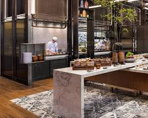
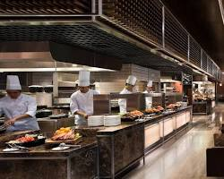
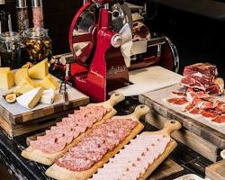
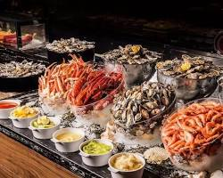
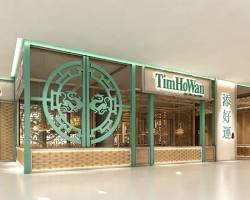
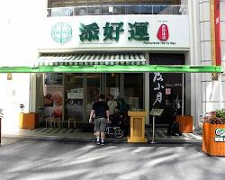

17:15 - 17:45
입국 절차 및 짐 찾기
• 입국심사 (약 15-20분)
• 수하물 수취 (약 10-15분)
• 환전 또는 ATM 이용
• 무료 WiFi 연결 확인
• 공항 내 편의점에서 물 구매
📍 마카오국제공항 위치
17:45 - 18:30
이동 옵션 (거리: 3.9km)
옵션 1: 갤럭시 무료 셔틀버스 ⭐추천
• 북쪽 출구로 나가서 Galaxy 셔틀 찾기
• 운행시간: 11:00-21:00 (15-20분 간격)
• 소요시간: 약 15-20분
• 💡 팁: 안다즈는 갤럭시 그룹 소속
옵션 2: LRT (경전철)
• 공항역 → Cotai West역 (10분, $2)
• 역에서 도보 5분
옵션 3: 택시
• 소요시간: 3-5분
• 예상 요금: $50-80 MOP
18:30 - 19:00
호텔 정보 (평점: 9.2/10 - Booking.com)
• North Tower, Level 6 체크인 데스크
• 아이용 어메니티 요청 (치약, 슬리퍼)
• 무료 미니바 확인 (마카오 전통 과자 포함)
• 16:00-19:00 라운지 무료 스낵/음료
• Grand Resort Deck 무료 이용권 수령
• 객실 업그레이드 가능 여부 확인
💡
리뷰 하이라이트:
"직원들이 매우 친절하고 아이 배려가 좋음"
"무료 미니바와 라운지가 훌륭함"
📍 안다즈 마카오 위치
19:00 - 20:30
🍽️ 저녁 식사 (추천 3곳)
1. 안다즈 키친 (호텔 6층) ⭐아이 동반 추천
• 포르투갈-마카오 퓨전 요리
• 라이브 쿠킹 스테이션
• 디너: 18:00-22:30
• 예상 가격: 성인 $250-350 MOP
• 평점: 5.0/5 (TripAdvisor)

🔗 공식 사이트
2. Urban Kitchen (JW Marriott 1층) ⭐최고 뷔페
• 도보 10분 or 셔틀버스 3분
• 6개 라이브 스테이션 (해산물, 일식, 중식 등)
• 디너: 18:00-21:30
• 가격: 성인 $638 (평일) / 아이 무료 (7세 이하)
• 평점: 4.7/5 (1,776 리뷰)
• 💡 "마카오 최고의 뷔페" - Maven of Macau



⭐⭐⭐⭐⭐ 5.0/5
"75% 음식이 훌륭하고, 해산물이 특히 신선. 킹크랩, 새우, 굴 무제한!"
🔗 예약 사이트
3. Tim Ho Wan (Broadway Food Street) 🥟
• 셔틀버스로 15분 (Broadway 하차)
• 미슐랭 스타 딤섬 레스토랑
• 운영: 09:00-21:00
• 예산: 인당 $80-150 MOP
• 필수 메뉴: BBQ 돼지고기 번, 무 케이크
• 💡 아이 친화적, 빠른 서비스


📍 Broadway Food Street
20:30 - 21:30
🌃 갤럭시 단지 탐방
저녁 식사 후 가벼운 산책
• Fortune Diamond 로비 분수쇼 (20분마다)
• Crystal Lobby 야경 포토존
• 갤럭시 프롬나드 쇼핑 아케이드
• 편의점에서 내일 간식/물 구매
• 아이 유모차 대여 가능 (컨시어지)
💡 팁: 단지가 넓으니 호텔 위치 파악 필수
21:30 - 22:00
🛏️ 호텔 복귀 & 휴식
내일을 위한 준비
• 아이 목욕 및 취침 준비
• 무료 미니바 간식 확인
• 내일 수영복, 수건 준비
• Grand Resort Deck 운영시간 확인
• 객실 커튼/온도 조절
• 룸서비스 메뉴 확인 (24시간)
🌙 숙면 팁: 시차 적응 위해 일찍 취침